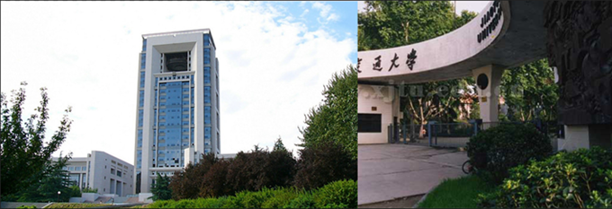
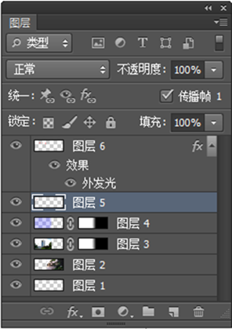

（1）熟练掌握空白图像的建立。
（2）熟练掌握选框工具的使用。
（3）熟练掌握图层、图层蒙板、图层样式的应用。
（4）熟练掌握油漆桶工具，模糊工具的使用。
（5）熟练掌握 “颜色范围”菜单的使用。
图7-12合成图像
下载素材，为交大主页制做一合成图像如下图7-12所示，要求结逢之间过度自然。
Windows 2007，Photoshop
1.启动Photoshop，新建一空白图像文件，名命为合成图像.psd，1024X350,分辨率72像素/英寸,颜色模式RGB，背景内容为透明,保存。(注：psd格式是Photoshop的专有格式，将保存图层以及设置的蒙板和样式,方便以后的编辑)
2.打开校正门.jpg图像文件，用矩形选框工具，样式为固定大小（600X350）以底边为参考线选择后复制，再选择合成图像窗口后，粘贴图像并右对齐。

图7-13粘贴两张图像后的效果
3.打开主楼.jpg图像文件，用矩形选框工具，样式为固定大小（600X350）以底边为参考线选择后复制，再选择合成图像窗口后，粘贴图像并左对齐，如图7-13所示。
4.选中合成图像窗口,创建一新的图层,用矩形选框工具，样式为正常，拖出一矩形选框复盖在主楼.jpg图像之上，设置前景色为蓝色，选择油漆桶工具，不透明度设为40%,将矩形选框充色，这一目的是为后面添加的文字能更加清晰。
5.选中主楼.jpg图像所在的层,添加图层蒙板,一定是选中蒙板缩览图，用渐变工具（渐变色为白至黑）在两图结逢处添加一线性渐变蒙板。再选中图层缩览图，用模糊工具，强度为100%,将其边缘模糊处理。
6.选中主楼.jpg图像所在的层的上一层,添加图层蒙板,用渐变工具（渐变色为白至黑）在两图结逢处添加一线性渐变蒙板。
7.打开徽标.jpg图像文件，用魔棒工具选取园形徽标后复制，再选中合成图像窗口,粘贴图像,通过编辑/自由变换菜单命令变成所需的大小后移到左上角。
8.打开校名.jpg图像文件，选用选择/颜色范围菜单命令,打开“颜色范围”对话框，设置被选择的颜色为白色，颜色容差为129。 按“确定”后可以看到选区为白色区域，反选选区，再选充填菜单命令将充填为红色，按Ctrl+C复制选区图像，回到合成图像窗口，用命令Ctrl+V粘贴。在这个新的图层上添加图层样式为外发光，通过编辑/自由变换菜单命令变成所需的大小后移到左上角，完成所有操作后的图层调板如图7-14所示。

图7-14图层调板结果
9.最后再次保存文件。